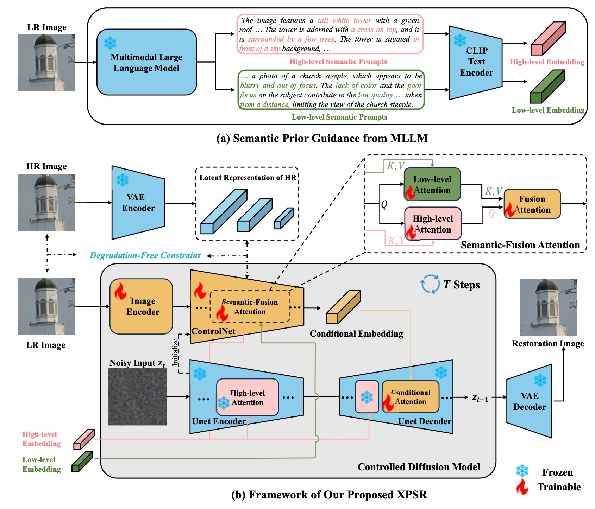
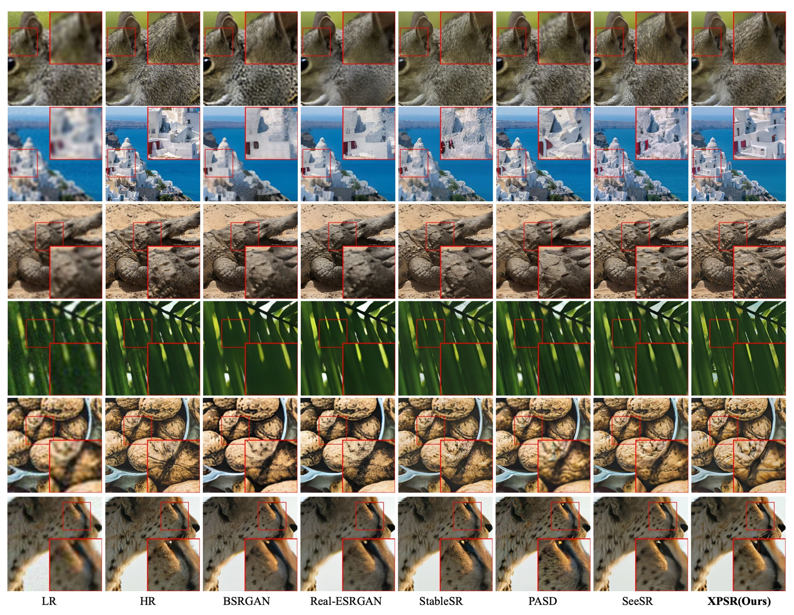

Diffusion-based super-resolution leans on a text-to-image prior to fill in what the low-resolution input lost. That prior is powerful and indifferent: given a badly degraded patch it supplies the most likely structure, which may have nothing to do with what was actually there.
基于扩散的超分辨率依赖文生图先验来填补低分辨率输入丢失的内容。这个先验强大而冷漠：给定一块严重退化的区域，它会给出最可能出现的结构，而那可能与真实存在的东西毫无关系。
Language is the obvious additional condition. A caption can say the image contains a shop sign with specific letterforms, supplying high-level context that no amount of upsampling will recover from the pixels. The difficulty is that the caption must be produced from the degraded image and therefore carries its degradation with it.
语言是最直觉的附加条件。一段描述可以说出画面里有一块写着特定字形的店招，从而提供无论怎么上采样都无法从像素中恢复的高层上下文。难点在于：这段描述必须由退化图像生成，因此也就带着那份退化一起来了。
XPSR is built around that tension. It uses multimodal language models for semantic conditions, fuses them with image features through Semantic-Fusion Attention, and adds a Degradation-Free Constraint so the fused representation keeps the content without importing the corruption. On DIV2K-val it gains 10.34% in MANIQA over SeeSR.
XPSR 正是围绕这个张力构建的：它用多模态语言模型提供语义条件，通过语义融合注意力将其与图像特征融合，并加入无退化约束，使融合后的表示保留内容而不引入损坏。在 DIV2K-val 上，其 MANIQA 相对 SeeSR 提升 10.34%。
Semantic conditions come from a multimodal language model reading the degraded input, so the useful part — what the scene contains — arrives mixed with the degradation that produced it.
语义条件来自多模态语言模型对退化输入的读取，因此有用的那部分——场景里有什么——是与产生它的那份退化混在一起到来的。
Semantic-Fusion Attention controls how language and image features interact, and a Degradation-Free Constraint pushes the representation to keep content without carrying the low-resolution image’s corruption into generation.
语义融合注意力控制语言特征与图像特征如何交互；无退化约束则推动表示保留内容，同时不把低分辨率图像的损坏带入生成过程。
Relative gains over SeeSR on DIV2K-val: 10.34% MANIQA, 8.57% CLIPIQA, 1.64% MUSIQ, with 64.3% selection in a real-image user study — while diffusion methods still trail GAN-based ones on PSNR and SSIM.
DIV2K-val 上相对 SeeSR 的提升：MANIQA 10.34%、CLIPIQA 8.57%、MUSIQ 1.64%，真实图像用户研究中选择率 64.3%——而扩散方法在 PSNR 与 SSIM 上仍落后于 GAN 类方法。
The condition is also a carrier条件同时也是一个携带者
A semantic condition is attractive because it operates at a level pixels cannot. At 4× or 8× downscaling with compression on top, the identity of an object can be genuinely ambiguous from the image alone, and a caption can commit to one interpretation.
语义条件之所以有吸引力，是因为它工作在像素无法触及的层面。在叠加了压缩的 4× 或 8× 下采样下，仅凭图像本身，一个物体的身份可能真的无法确定，而一段描述则可以选定一种解释。
But the caption is generated from the same degraded input. Compression blocks, noise and blur are all present in the encoder’s input, so whatever semantic embedding comes out has been computed over corrupted evidence — the condition is informative and contaminated at once.
但这段描述是从同一张退化图像生成的。压缩块效应、噪声与模糊都存在于编码器的输入中，因此无论输出何种语义嵌入，它都是在受损证据上计算出来的——这个条件既提供信息，又被污染。
Concatenating it with image features therefore does two things at once: it adds high-level guidance and it opens a second path for the degradation to reach the generative process. Any method using language this way has to separate those effects before it can claim the guidance helped.
因此，把它与图像特征简单拼接会同时做两件事：既加入高层引导，又为退化进入生成过程开了第二条通路。任何以这种方式使用语言的方法，都必须先把这两种效应分开，才能声称引导起到了作用。


Fusion, and a constraint on what is carried融合，以及对所携带内容的约束
Semantic-Fusion Attention is the mechanism for combining the two modalities. Rather than treating the caption as a fixed prefix, it lets image and semantic features interact, so the influence of language is modulated by what the image actually supports.
语义融合注意力是结合两种模态的机制。它不把描述当作固定的前缀，而是让图像特征与语义特征相互交互，于是语言的影响会被图像实际支持的内容所调节。
The Degradation-Free Constraint is the counterpart that does the separating. It pushes the fused representation toward preserving useful content while discouraging it from encoding the low-resolution image’s degradation — in effect asking the condition to describe the scene and not the damage.
无退化约束则是负责分离的对应件。它推动融合表示保留有用内容，同时抑制其对低分辨率图像退化的编码——实际上是在要求这个条件描述场景，而不是描述损伤。
The pairing is the point. Fusion alone would let a contaminated semantic signal through more effectively; the constraint alone would suppress signal along with corruption. Treating semantic assistance and degradation suppression as complementary requirements is what makes the conditioning usable.
关键在于两者成对出现。只有融合，会让被污染的语义信号更有效地通过；只有约束，则会把信号连同损坏一起压掉。把语义辅助与退化抑制当作互补的两项要求，才使这套条件化可用。
Measuring guidance and fidelity separately把引导与保真分开测量
The evaluation covers synthetic degradations and real photographs, with captions produced from the degraded inputs rather than from clean references — the realistic setting, and the one that makes the constraint necessary rather than optional.
评测覆盖合成退化与真实照片，描述均从退化输入生成、而非从干净参考生成——这是真实的设定，也正是使该约束成为必需而非可选的设定。
On DIV2K-val the reported relative gains over SeeSR are 10.34% in MANIQA, 8.57% in CLIPIQA and 1.64% in MUSIQ, and a real-image user study gives XPSR 64.3% of selections among six methods. These are perceptual measures, and the paper is careful to note that diffusion methods can still trail GAN-based ones on PSNR and SSIM.
在 DIV2K-val 上，相对 SeeSR 的报告提升为 MANIQA 10.34%、CLIPIQA 8.57%、MUSIQ 1.64%；真实图像用户研究中，XPSR 在六种方法间获得 64.3% 的选择率。这些都是感知指标，而论文也谨慎指出：扩散方法在 PSNR 与 SSIM 上仍可能落后于 GAN 类方法。
That gap is not a footnote. Pixel-level similarity and perceptual quality genuinely disagree for generative restoration, and the paper treats the disagreement as a finding rather than averaging it away — a model can be preferred by humans and farther from the reference at the same time.
这个差距不是脚注。对生成式恢复而言，像素级相似度与感知质量确实会给出相反的判断，而论文把这种不一致当作一条发现，而不是把它平均掉——一个模型完全可能同时被人更偏好、又离参考更远。


Semantic help without semantic invention要语义辅助，不要语义编造
The conditional reading is the honest one. Better conditioning improves this pipeline under these settings; it does not establish that language can recover information absent from an image with certainty, because the caption is itself an inference from degraded evidence.
诚实的读法是带条件的：更好的条件化在这些设置下改善了这条流水线，但它并未确立“语言能够确定地恢复图像中缺失的信息”——因为描述本身也是从退化证据中推断出来的。
The failure mode to watch is confident misdescription. If the language model commits to the wrong object, the generative prior will render it convincingly — stronger semantic guidance raises both the quality of correct guesses and the plausibility of wrong ones.
需要警惕的失效模式是自信的错误描述。如果语言模型认错了物体，生成先验会把这个错误渲染得非常可信——更强的语义引导会同时提高正确猜测的质量与错误猜测的可信度。
That suggests an asymmetric deployment pattern. Use semantic conditioning where the scene is ambiguous and the interpretation is cheap to verify, and stay sceptical where a wrong guess downstream is expensive. The constraint reduces leakage; it cannot audit the caption.
这提示了一种非对称的部署方式：在场景确实模糊、且解释便于验证的地方使用语义条件化；在下游猜错代价高昂的地方保持怀疑。约束能减少泄漏，但它无法审查那段描述。
Paper & authors
XPSR: Cross-modal Priors for Diffusion-based Image Super-Resolution
ECCV 2024
Cite this work
@misc{qu2024xpsrcrossmodalpriorsdiffusionbased,
title = {XPSR: Cross-modal Priors for Diffusion-based Image Super-Resolution},
author = {Yunpeng Qu
and Kun Yuan
and Kai Zhao
and Qizhi Xie
and Jinhua Hao
and Ming Sun
and Chao Zhou},
year = {2024},
eprint = {2403.05049},
archivePrefix = {arXiv},
primaryClass = {cs.CV},
url = {https://arxiv.org/abs/2403.05049}
}